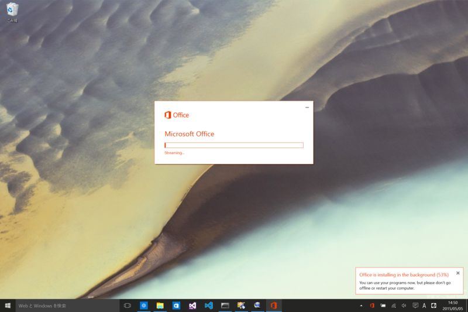
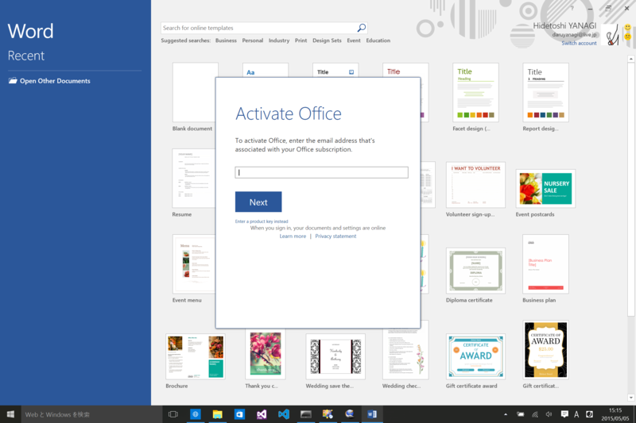
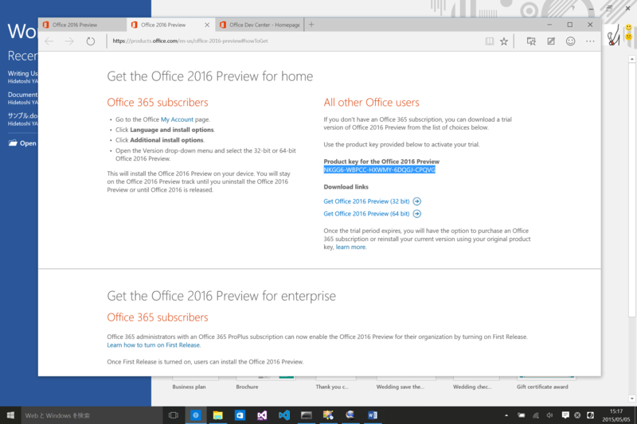
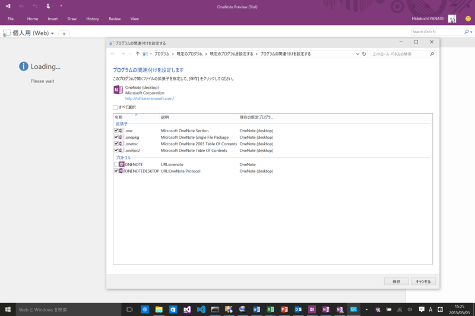
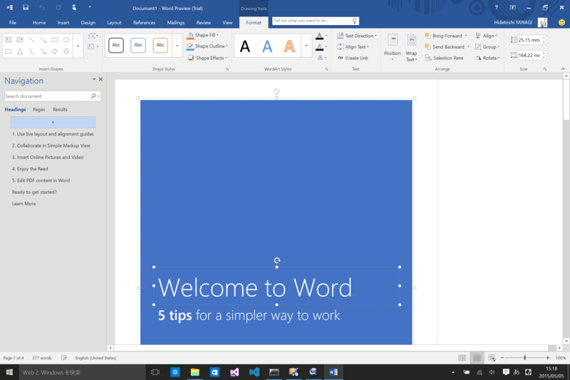
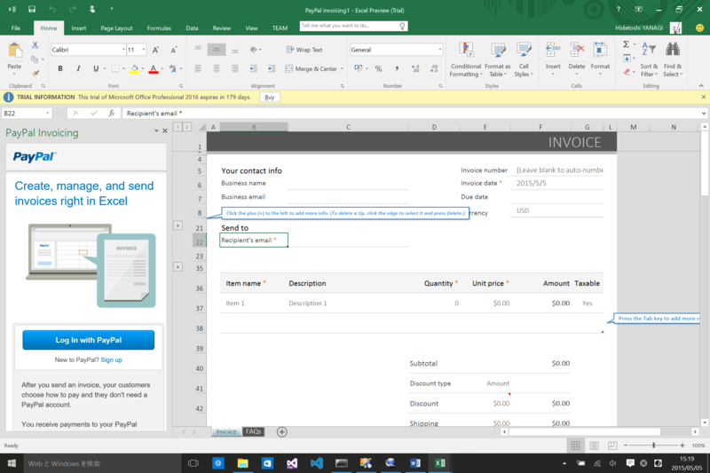
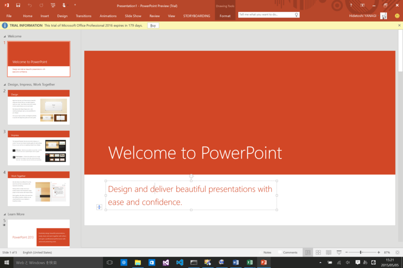
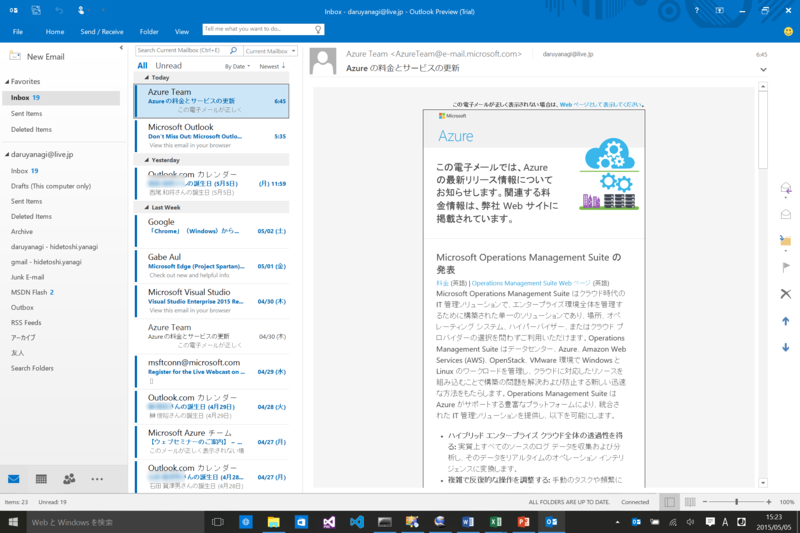
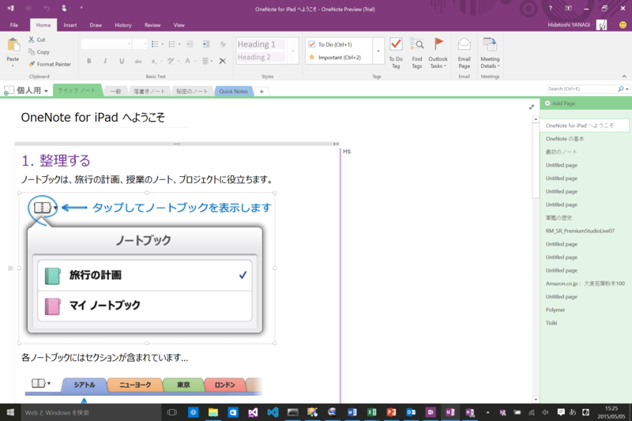

Office 2016 Public Preview
公開日：
これまで IT Pro および開発者向けに限定されていた「Microsoft Office 2016」のプレビューが、下々のものへ拡大されましたので、さっそく Surface Pro 3（Windows 10 Insider Preview）にインストールしてみました。ダウンロードはこちらから。
名前は「Office 2016」だけど、2015年に出るんだね？ そういうものだっけか。注意しなければならないのは、「Office 2013」と共存できないことです。「Office 2013」を利用している場合は、あらかじめアンインストールしておきましょう。なお、システム要件は Windows 7 以降（Windows 7, Windows 8, Windows Server 2008 R2, or Windows Server 2012）です。Windows 10 Insider Preview は入ってませんが、まぁ、気にしない。

インストールプロセスは、「Office 2013」と同じ感じ（変わるかもしれませんが）。ストリーミングされるので、インストール中でも使えます。

起動するとアクティベート画面が現れ、Microsoft アカウントでのログインを要求されます。しかし、これは無視して［Next］ボタンの下にある［Enter a product key instead］をクリック。

「Office 2016」のダウンロードサイトに書いてあるプロダクトキーを入力しましょう。これで準備は完了。
今回の含まれているのは、
- Word 2016 Preview
- Excel 2016 Preview
- PowerPoint 2016 Preview
- Outlook 2016 Preview
- OneNote 2016 Preview
の5つで、英語版のみのようです（サポート言語に日本語は入っていて、日本語入力は可能。言語パックないのかな？）。「OneNote 2016 Preview」は Windows 10 Insider Preview にビルトインされているモノ（Windows ストア アプリ版）とは違う、いわゆるデスクトップ向け。ちょっとややこしいですね。

関連付けできますけど、個人的にはシンプルなビルトイン版の方が好みだったり（まだ日本語に対応していないという弱点はありますが）。
Word 2016 Preview

Word、Excel、PowerPoint にコマンド検索機能が付いたみたい。これはちょっと便利かもね。あと、この3つはデータ損失防止（DLP）にも対応しているとのこと。
Excel 2016 Preview

ビジネス向けの機能が増えたのかなぁ。
PowerPoint 2016 Preview

Outlook 2016 Preview

多要素認証などに対応。
OneNote 2016 Preview

正式リリースは秋になるとのことで、それまで毎月新機能が追加されるらしい。ぼちぼち使っていこうと思う。